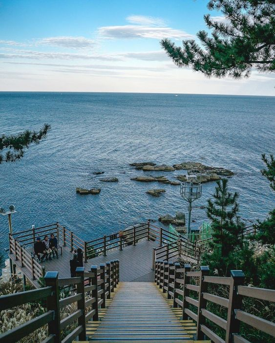

SOKCHO
푸른 자연, 밝은 미래가 있는

당신을 초대합니다.
강원도 동북부에 위치한 시. 동쪽은 동해 바다와 접하고 서쪽은 설악산과 그 너머의 인제군 북면, 남쪽으로는 양양군 강현면, 북쪽으로는 고성군 토성면과 접한다. 인구는 약 8만 2천여 명으로 원주시, 춘천시, 강릉시, 동해시에 이어 강원도에서 5번째로 많고, 면적은 가장 좁아 인구 밀도는 도내 1위이다. 특히 대한민국 실효지배 지역 중, 북위 38도선 이북 지역의 최대 도시이며 북한의 개성시보다 위도가 더 높은 대한민국 최북단 도시이다. 남한 본토 내에서 서로 가장 먼 도시는 이곳과 목포시인데, 편도 530km가 넘는다. 강릉시의 주문진과 더불어 동해안 주요 어업 전진기지 중 하나이며, 설악산국립공원이 시 면적의 절반 정도를 차지하고 있다. 대표적인 국내 여행지 중 한 곳으로 관광산업이 발달하여 있다.
명소
hi
hi
hi